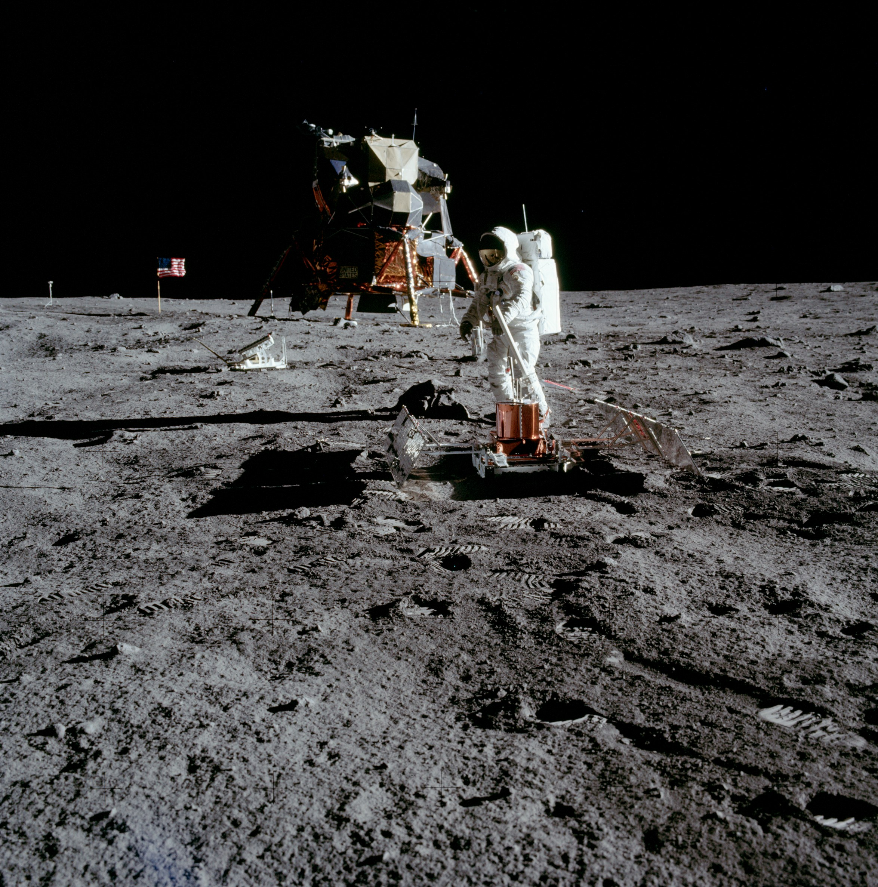

CHAPTER 01 · JULY 16–20, 1969
The Journey
Before the silence, there was a journey that changed history.
The beginning
My name is Eagle. I was a special spacecraft called a Lunar Module. My mission was extraordinary: help the first humans land on the Moon.
On July 16, 1969, a powerful Saturn V rocket launched Apollo 11 into space. Three astronauts began the journey: Neil Armstrong, Buzz Aldrin, and Michael Collins.
Approaching the Moon
Four days later, it was my turn. Armstrong and Aldrin were inside me while Collins stayed aboard Columbia, orbiting the Moon.
I separated from Columbia and began my descent. My engine slowed me as the gray surface grew closer. Rocks and a crater made the planned landing area dangerous, so Armstrong guided me toward safer ground.
A historic landing
On July 20, 1969, I touched down in the Sea of Tranquility. For the first time, humans had safely landed on the Moon.
But my greatest adventure had only begun. Soon, two astronauts would explore another world — and one part of me would remain behind.
CHAPTER 02 · JULY 1969
The Achievement
The greatest discoveries begin with a single step.

More than footprints
My name is Eagle. I had landed safely, but the mission was far from over.
Neil Armstrong became the first human to walk on the Moon. Buzz Aldrin joined him. Together, they explored a quiet, dusty world full of questions.
Discovering a new world
My astronauts collected rocks and soil. About 21.5 kilograms of lunar samples returned to Earth so scientists could study the Moon's history.
They also placed special instruments on the surface. A passive seismic experiment measured vibrations to help scientists understand the Moon's interior. A laser retroreflector reflected laser light from Earth, helping researchers measure the Earth–Moon distance.
A separate solar wind experiment collected particles from the Sun in a sheet of foil that the astronauts later returned to Earth for study.
The science made possible
I did not collect samples or make measurements myself. But I carried the astronauts and equipment that made this science possible.
When their work was finished, my astronauts prepared for the journey home.
Moon rocks
Samples helped scientists study the Moon's composition and past.
Moon vibrations
A passive seismometer recorded movement to explore the Moon's interior.
Laser reflections
A retroreflector helps scientists measure the distance between Earth and the Moon.
CHAPTER 03 · JULY 21, 1969 → TODAY
The Silent Guardian
Some journeys end. Their stories live forever.
A machine of two halves
My name is Eagle. I had carried two astronauts safely to the Moon. Now, they needed to return home.
I was built in two parts. My upper half, the Ascent Stage, could lift the astronauts back into orbit. My lower half, the Descent Stage, was designed to stay.
The final takeoff
On July 21, 1969, Armstrong and Aldrin lifted off from the lunar surface in my Ascent Stage. The Descent Stage remained as their launch platform.
They met Michael Collins aboard Columbia, and on July 24, all three astronauts returned safely to Earth. The Ascent Stage was later discarded in lunar orbit; it did not return to Earth.
Forty years later
My lower half still rested at Tranquility Base. In 2009, NASA's Lunar Reconnaissance Orbiter photographed the Apollo 11 landing site. My Descent Stage could be identified from orbit.
Nearby, some equipment had stopped working long ago. But the separately deployed laser retroreflector remained useful for lunar ranging measurements.
My legacy
I was never meant to return to Earth. I was meant to help humans reach the Moon — and begin their journey home.
My journey ended in 1969. My story still inspires the next generation of explorers.